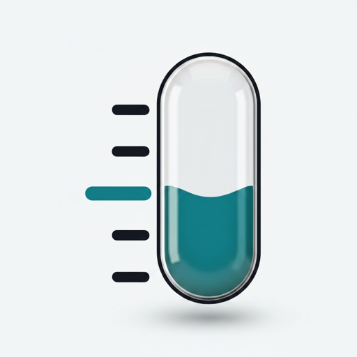

Doseline
Doseline is a tracker for GLP-1 treatment. It keeps your record on your device, with no account and no server behind it.
Doseline is not medical advice. It records what you tell it and does the arithmetic. Decisions about your medication belong to you and the professional who prescribed it.